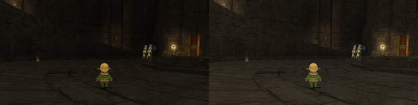

ffxiun0
FFXI Gamma
ウィンドウモード・仮想フルスクリーンモードで動作する FINAL FANTASY XI のウィンドウを
正しい色合いに調整し、暗い画面を明るく表示するための常駐アプリケーションです。
他に、スクリーンショットの保存や、ウィンドウ位置の記憶といった機能も備えています。

Copyright © 2002-2015 SQUARE ENIX CO., LTD. All Rights Reserved.
FINAL FANTASY XI の「明るさ調整」では正しいガンマ補正を行う事ができません。
そのため、どのような調整を行っても視認性を向上させることはできませんでした。
このツールはディスプレイのガンマ補正をウィンドウモードでも有効にすることで、
フルスクリーンモードと同じ色合いを再現し、「画面が暗い」と感じる問題を修正できます。
機能
-
ディスプレイのガンマ値（明るさ）を動的に変更する
- FFXI のウィンドウがアクティブになった場合に、ディスプレイのガンマ値を変更する。
- 非アクティブになった場合には、ディスプレイのガンマ値を元に戻す。
- マルチディスプレイでは、表示されているディスプレイのみガンマ値が変更される。
-
画像の保存（スクリーンショット）
- ガンマ（明るさ）補正された画像を保存できる。
- 画像に任意の文字を追記できる。
-
ウィンドウ位置の復元
- FFXI 起動後、前回の表示位置に自動的にウィンドウを移動する。
- 仮想フルスクリーンモードのウィンドウを指定するディスプレイに表示できる。
-
ボリューム調整
制限・副作用など
- ウィンドウモード・仮想フルスクリーンモードにのみ対応。
- FFXI のウィンドウがアクティブの間は他のウィンドウの色合いがおかしくなる。
- ディスプレイのガンマ値を他のツールなどで変更していた場合は、このツールにてガンマ値が上書きされてしまう。
- ウィンドウが最小化されている場合は画像を保存できない。
-
管理者権限が必要
- ホットキーによる画像保存・ボリューム調整
- ウィンドウ位置を復元する機能
システム要件
- .NET Framework 4.8 以降がインストールされている事。
- Windows 10 以降。
ダウンロード
- バイナリ
- ffxigamma-2.3.1.zip
- ソースコード
- https://github.com/ffxiun0/ffxigamma
- ライセンス
- MIT License
変更履歴
下記を参考にして下さい。
https://github.com/ffxiun0/ffxigamma/commits/master
使い方
- ffxigamma.exe を起動する。（タスクトレイに常駐する。FFXI の起動は後でも先でも良い）
- FFXI のウィンドウをアクティブにする。（明るさが調整される）
- タスクトレイの FFXI Gamma のメニューから画像を保存できる。
使い方（同時に FFXI を起動する）
FFXI のショートカットを実行する代わりに ffxigamma.exe を実行することで、
FFXI の起動と FFXI Gamma の機能有効化を同時に行うことができます。
既に ffxigamma.exe が常駐している場合は FFXI の起動のみを行います。
- タスクトレイの FFXI Gamma のメニューから「設定」＞「オプション」を開く。
- 「その他」タブを開く。
- 「自動的にプログラムを起動する」にチェックを入れる。
-
ホットキーなどのフル機能を使う場合
- 「常に管理者モードで起動する」にチェックを入れる。
- ffxigamma.exe を実行すると FFXI が起動する。
使い方（ホットキーで画像保存できるようにする）
- タスクトレイの FFXI Gamma のメニューから「設定」＞「オプション」を開く。
- 「画像保存」タブを開く。
- 「ホットキーを有効にする」にチェックを入れる。
- OKを押す。
-
管理者モードで起動する。(管理者モードで起動していない場合のみ)
- FFXI を終了しておく
-
タスクトレイの FFXI Gamma のメニューから「FINAL FANTASY XI を起動」をクリックする。
- もしくは「設定」＞「管理者モードで再起動」をクリックする。でも良い。
- 「管理者モードで再起動」を選んだ場合は通常通り FFXI を起動する。
- FFXI のウィンドウをアクティブにする。
- F11 キーを押すと画像を保存できる。
使い方（ホットキーでボリューム調整できるようにする）
- タスクトレイの FFXI Gamma のメニューから「設定」＞「オプション」を開く。
- 「サウンド」タブを開く。
- 「ホットキーを有効にする」にチェックを入れる。
- OKを押す。
-
管理者モードで起動する。(管理者モードで起動していない場合のみ)
- FFXI を終了しておく
-
タスクトレイの FFXI Gamma のメニューから「FINAL FANTASY XI を起動」をクリックする。
- もしくは「設定」＞「管理者モードで再起動」をクリックする。でも良い。
- 「管理者モードで再起動」を選んだ場合は通常通り FFXI を起動する。
- FFXI のウィンドウをアクティブにする。
- F12 キーを押すとミュートされる。
- Shift+F12 キーを押すとボリュームが上がる。
- Shift+F11 キーを押すとボリュームが下がる。
使い方（表示するディスプレイを指定する）
仮想フルスクリーンモードのウィンドウを指定のディスプレイに表示させる方法です。
- タスクトレイの FFXI Gamma のメニューから「設定」＞「オプション」を開く。
- 「ウィンドウ」タブを開く。
- 「ウィンドウの位置を記憶する」にチェックを入れる。
- 「FINAL FANTASY XI」を選択し「編集」を押す。
-
「ディスプレイの位置を設定」リストからディスプレイを選択する。
（ディスプレイの位置とサイズが設定される）
- OKを押す。
- OKを押す。
-
管理者モードで起動する。(管理者モードで起動していない場合のみ)
- FFXI を終了しておく
-
タスクトレイの FFXI Gamma のメニューから「FINAL FANTASY XI を起動」をクリックする。
- もしくは「設定」＞「管理者モードで再起動」をクリックする。でも良い。
- 「管理者モードで再起動」を選んだ場合は通常通り FFXI を起動する。
設定（画像保存）
- ガンマ補正を有効にする
- 画像をガンマ補正した状態で保存します。
- 保存先フォルダー
- 「画像をフォルダーに保存」またはホットキーで保存した場合の保存先。
- 画像形式
- PNG と JPEG のみ選択できます。
- ホットキーを有効にする
-
指定のホットキーで画像保存を実行します。
この機能を使うには FFXI Gamma を管理者権限で実行している必要があります。
ホットキーはアクティブウィンドウに対してのみ有効です。
- 画像に文字を追記する
-
任意の文字を画像の指定の位置に追記します。
キーワード置換機能があり日時を動的に書き込む事ができます。
【例】@yyyy@/@M@/@d@ @HH@:@mm@:@ss@.@ff@
【結果】2015/6/3 21:04:03.61
| キーワード | 意味 | 値 |
|---|
| @yy@ | 年 | 15 |
| @yyyy@ | 年 | 2015 |
| @M@ | 月 | 6 |
| @MM@ | 月 | 06 |
| @d@ | 日 | 3 |
| @dd@ | 日 | 03 |
| @ddd@ | 曜日 | 水 |
| @dddd@ | 曜日 | 水曜日 |
| @h@ | 時 | 9 |
| @hh@ | 時 | 09 |
| @H@ | 時(24時間) | 21 |
| @HH@ | 時(24時間) | 21 |
| @m@ | 分 | 4 |
| @mm@ | 分 | 04 |
| @s@ | 秒 | 3 |
| @ss@ | 秒 | 03 |
| @f@ | 1/10秒 | 6 |
| @ff@ | 1/100秒 | 61 |
| @tt@ | 午前/午後 | 午後 |
| @z@ | タイムゾーン | +9 |
| @zz@ | タイムゾーン | +09 |
| @zzz@ | タイムゾーン | +09:00 |
設定（ウィンドウ）
- ウィンドウの位置を記憶する
-
FFXI のウィンドウが表示された際にウィンドウを前回の表示位置に復元します。
ウィンドウが閉じられた際に位置が保存されます。
この機能を使うには FFXI Gamma を管理者権限で実行している必要があります。
- ガンマを変更するウィンドウの名前
-
ウィンドウがアクティブになった際に、ガンマ値を変更するかどうかはウィンドウの名前で判断されます。
ウィンドウ名が異なる場合はこのリストに追加する事で対応できます。
- ディスプレイの位置を設定
-
指定のディスプレイの位置とサイズを設定します。
仮想フルスクリーンモードのウィンドウを任意のディスプレイに表示させるために使用します。
- 非アクティブ時にもガンマ補正をする
-
対象のウィンドウが非アクティブ状態の場合にもガンマ補正を有効にします。
マルチディスプレイ環境で仮想フルスクリーンモードを使う場合に活用できます。
設定（サウンド）
- ホットキーを有効にする
-
指定のホットキーによるボリューム調整を有効にします。
この機能を使うには FFXI Gamma を管理者権限で実行している必要があります。
設定（その他）
- FFXI のガンマ値
-
対象のウィンドウがアクティブになった際に設定されるガンマ値です。
FFXI のガンマ値が 1.8、Windows のガンマ値が 2.2 であるため、1.8 / 2.2 = 0.818181818181818 が補正ガンマ値となります。
- Windows のガンマ値
-
対象のウィンドウが非アクティブになった際に設定されるガンマ値です。
1 が Windows 標準のガンマ値になります。(OS の仕組み上 1 でガンマ 2.2 となるようになっている)
- 常に管理者モードで起動する
- ffxigamma.exe 実行時、自動的に管理者モードになります。
- 自動的にプログラムを起動する。
-
ffxigamma.exe 実行時、同時に FFXI または指定のプログラムを起動します。
管理者モードを指定しなければ管理者モードにはなりません。
- 起動するプログラム
-
コンテキストメニューまたは自動的に起動するプログラムを指定します。
FFXI の代わりに別のプログラムを起動する場合は「その他のプログラム」を選択します。
- プログラムのコマンドライン
-
「その他のプログラム」を選択した場合に起動するプログラムのコマンドラインを記述します。
空白を含むファイルパスは " で括る必要があります。
- 通知を表示する
- 通知領域からのメッセージを表示するかを指定します。
過去のバージョン
下記のリリース一覧から取得して下さい。
https://github.com/ffxiun0/ffxigamma/releases